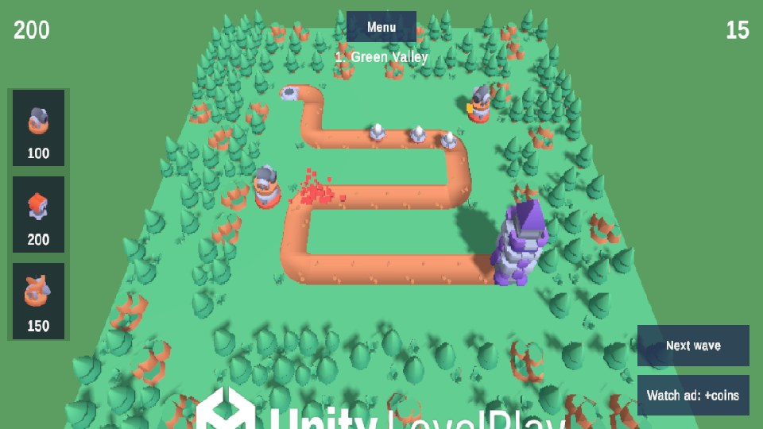
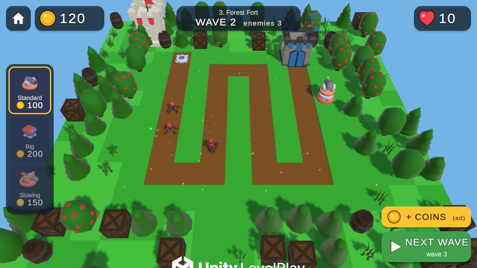
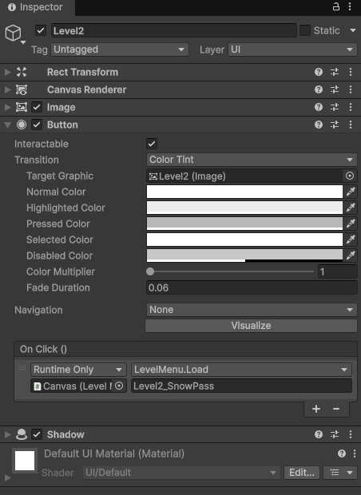
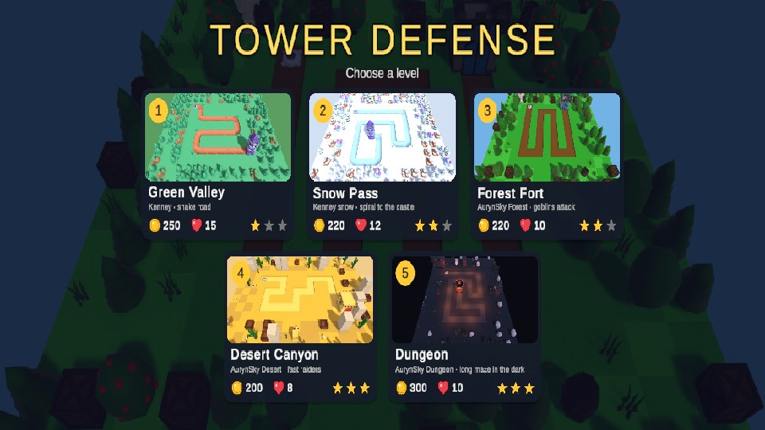
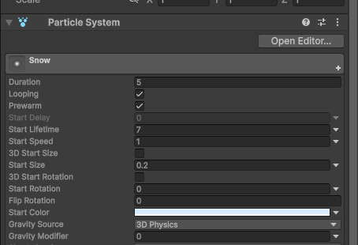
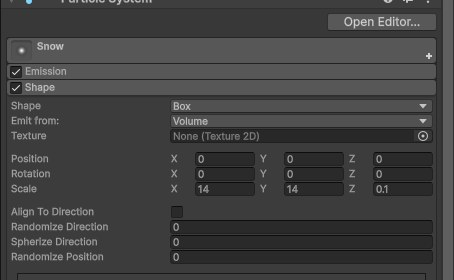
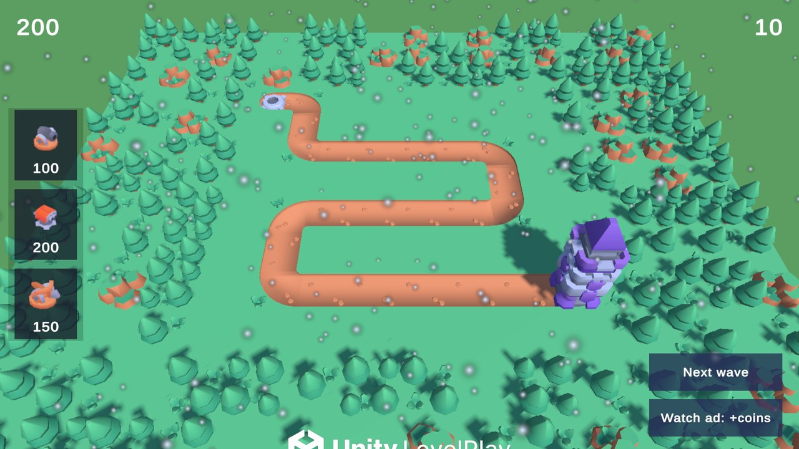
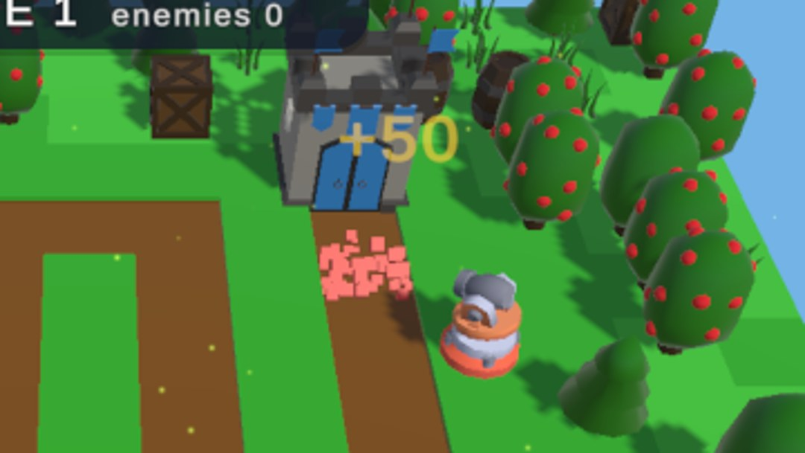
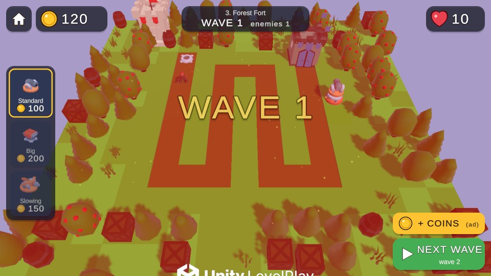

Меню, рівні та ефекти
Unity PRO · Tower Defense · самостійна робота після уроків 6–8


Частина 1 · Меню і рівні
1Зроби другий рівень
- У вікні Project виділи сцену гри і натисни Ctrl+D. Перейменуй копії:
Level1іLevel2. - Відкрий
Level2і зміни її: переклади дорогу інакше, у BuildManager зміни Start Coins, у замку (Castle) — кількість Hp. - Дорога змінилась — вороги мають знати новий шлях. Виділи об'єкт з NavMeshSurface і натисни Bake.
2Сцена меню
- File → New Scene, збережи як
Menu. - GameObject → UI → Canvas. У Canvas Scaler: UI Scale Mode = Scale With Screen Size, Reference Resolution = 1920 × 1080.
- Додай дві кнопки: GameObject → UI → Button - TextMeshPro. Напиши на них «Level 1» і «Level 2».
- Створи скрипт
LevelMenuі додай його на Canvas:
using UnityEngine;
using UnityEngine.SceneManagement;
public class LevelMenu : MonoBehaviour
{
// Відкриває сцену за назвою — назву пишемо в кнопці
public void Load(string sceneName)
{
Time.timeScale = 1f;
SceneManager.LoadScene(sceneName);
}
public void LoadMenu()
{
Load("Menu");
}
}- Виділи кнопку. У On Click () натисни +, перетягни туди Canvas, вибери LevelMenu → Load і впиши назву сцени, наприклад
Level2.

LevelMenu.Load і передає назву сцени.3Додай сцени у збірку і кнопку «Меню»
- File → Build Profiles → Scene List: перетягни туди
Menu(першою!), потімLevel1,Level2. - У кожному рівні додай на Canvas скрипт
LevelMenuі кнопку «Menu», яка викликає LevelMenu → LoadMenu.

Частина 2 · Ефекти
4Сніг — без жодного рядка коду
Відео з усіма кроками: snow-slides.mp4 (1 хвилина).
- Hierarchy → ПКМ → Effects → Particle System, назви
Snow. - Transform: Position Y = 6, Rotation X = 90 — частинки летітимуть униз.
- Головний модуль: Start Lifetime 7, Start Speed 1, Start Size 0.2, Start Color світло-блакитний, Max Particles 600, ✓ Prewarm (сніг уже йде на старті).
- Emission: Rate over Time = 100.
- Shape: Shape = Box, Scale = 14 × 14 × 0.1 — сніг падає з усієї площі поля.
- Увімкни Noise, Strength = 0.3 — сніжинки гойдаються.



5«+50» над переможеним ворогом
- GameObject → 3D Object → Text - TextMeshPro. Назви
RewardText, Font Size 6, вирівнювання по центру, колір жовтий. - Додай на нього скрипт
FloatUp— текст піднімається і зникає:
using UnityEngine;
public class FloatUp : MonoBehaviour
{
[SerializeField] private float speed = 1.5f;
[SerializeField] private float lifetime = 1f;
void Start()
{
Destroy(gameObject, lifetime); // знищиться сам через секунду
}
void Update()
{
transform.position += Vector3.up * speed * Time.deltaTime;
transform.rotation = Camera.main.transform.rotation; // завжди дивиться в камеру
}
}- Перетягни
RewardTextуAssets/Prefabsі видали зі сцени. - У
EnemyHealthзроби так само, як зboomFX(виділені рядки — нові):
using TMPro; // угорі файлу
...
[SerializeField] private GameObject boomFX;
[SerializeField] private GameObject rewardText;
...
Instantiate(boomFX, transform.position, Quaternion.identity);
GameObject text = Instantiate(rewardText, transform.position + Vector3.up, Quaternion.identity);
text.GetComponent<TMP_Text>().text = "+" + reward;
Destroy(gameObject);- У префабах ворогів перетягни
RewardTextу нове поле Reward Text.

6Трясіння камери, коли ворог дійшов до замку
Додай скрипт CameraShake на Main Camera. Він зроблений як singleton — так само, як BuildManager з уроку 3.
using UnityEngine;
public class CameraShake : MonoBehaviour
{
public static CameraShake Instance;
[SerializeField] private float duration = 0.3f;
[SerializeField] private float strength = 0.2f;
private Vector3 startPosition;
private float timer;
void Awake()
{
Instance = this;
}
void Start()
{
startPosition = transform.position;
}
public void Shake()
{
timer = duration;
}
void Update()
{
if (timer > 0)
{
timer -= Time.deltaTime;
transform.position = startPosition + Random.insideUnitSphere * strength;
}
else
{
transform.position = startPosition;
}
}
}У Castle після рядка hp--; додай:
CameraShake.Instance.Shake();
★Для тих, хто встиг
- Червоний спалах: UI Image на весь екран, червоний з прозорістю 0. У
CameraShake.Shake()зроби її напівпрозорою, а вUpdateплавно повертай прозорість до 0. - Турель «вискакує»: у
Startтурелі поставtransform.localScale = Vector3.zero, а вUpdateплавно збільшуй до 1. - Пил при будівництві: Particle System з одним Burst у модулі Emission, створюй його в
Node.Buildтак само, якboomFX.
Для викладача
Еталонний проєкт: ~/Robocode/Courses/Unity/TowerDefense2026, теги levels → ui → fx. П'ять рівнів, меню з прев'ю і весь інтерфейс та ефекти генеруються меню Robocode → Levels → Generate all levels + menu.
В еталоні те саме зроблено ширше, ніж у гайді: трасер пострілу з іскрами, червоний спалах ворога, підсвітка вибраної турелі в магазині, банер «WAVE N», лічильник ворогів, погода на кожному рівні, safe area під виріз камери. Ефекти там підключені через SendMessage("OnShot" / "OnDamaged" / "OnKilled"), щоб не змінювати логіку уроків; у гайді для учнів — простіші прямі виклики.